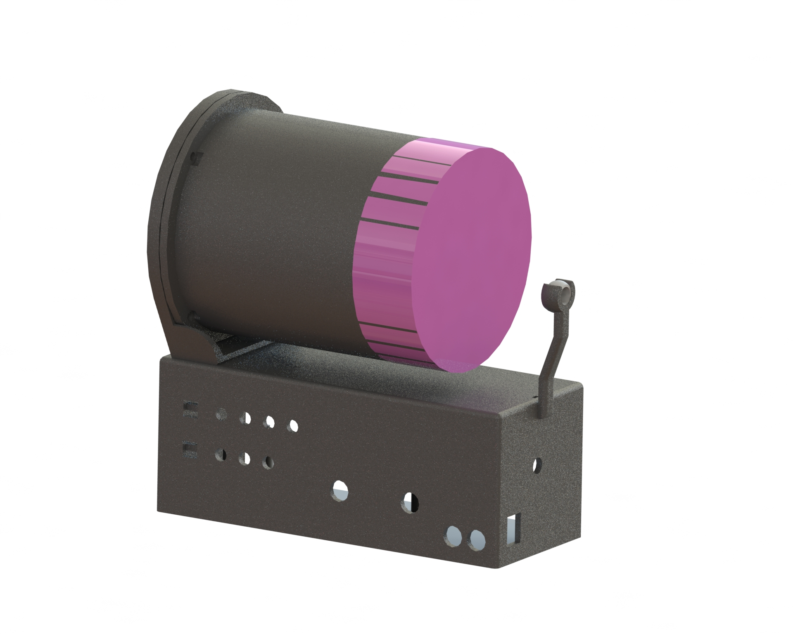

Acustic Resnoator
This project was Inspired by Steve Mould’s video where he demonstrates what a laser looks like when reflected off a vibrating membrane.

I built and designed the enclosure, circuitry, and interface (Arduino code) with the intension of keeping this project simple and under a couple days. It inevitable took slightly longer than the single weekend initially planned but I am very happy with the results.
It works by sending a signal generated from a DAC to a speaker. The cylinder has the speaker attached to it at one end and a rubber membrane attached at the other. The length of the cylinder was made such that the resonate frequency is within the frequency band of the Arduino that controls it, allowing for larger distortion in the membrane. A laser then shines on a mirror that is glued to the rubber membrane. As the membrane shakes around the lasers deflects around, creating some really cool patterns.
The problems that ended up being the hardest to overcome was that the Arduino and DAC had relatively slow sampling rates. This meant that the signal generated by the Arduino needed to have the smallest number of calculations per cycle as possible.